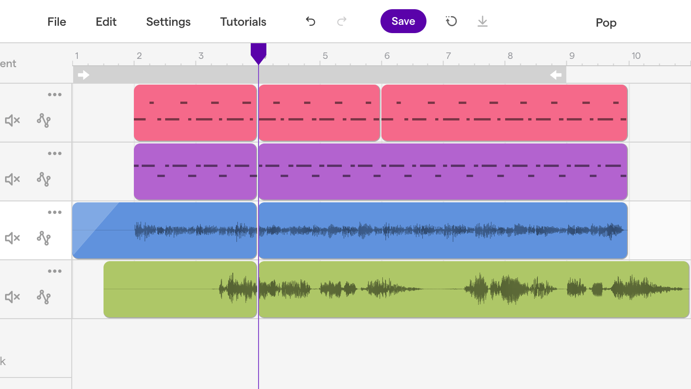

Creating a Podcast
Grades 7-9, 120-240min
In the Creating a Podcast project, students team up to write and record elements of a podcast about a novel they are reading. Students choose components from a list of ideas, each of which are worth a certain number of points towards the effort portion of the project grade. After brainstorming and scripting each segment, students act out and record their podcast using Soundtrap. The materials for this project are based on Harper Lee’s “To Kill a Mockingbird”, but this project would work well with most novels.
Topics addressed
- Central themes in novels
- Symbolism and imagery in novels
- Characters and relationships in novels
- Primary CT concept: decomposition. Students break down a complicated novel into distinct elements, relating them to one another in discrete and creative podcast segments.
Students will be able to
- Create a podcast based on elements on a novel they are reading
- Identify themes and symbols within a novel
- Write and act out interviews and conversations with characters from a novel
Materials
-
Slides:


-
Student packet:


Prep
- Familiarize yourself with Soundtrap and create an account before students begin recording
- Students should be finished or nearly finished with the novel they will be writing about before finishing their podcasts
Suggested lesson breakdown
This project can be done in a few days or spread over a couple of weeks
-
Day one
- 10min – introduce project using PowerPoint presentation
- 10-30min – place students into their teams, allow them to start brainstorming podcast segment ideas
-
Day two
- 30-90min – students collaborate within their teams to write and rehearse each podcast segment
-
Day three
- 30-60min – teams record their podcast segments
-
Day four
- 30-60min – teams edit their podcasts
Common Core standards
-
CCSS.ELA-Literacy.W.8.2
Write informative/explanatory texts to examine a topic and convey ideas, concepts, and information through the selection, organization, and analysis of relevant content. -
CCSS.ELA-Literacy.W.8.2.C
Use appropriate and varied transitions to create cohesion and clarify the relationships among ideas and concepts. -
CCSS.ELA-Literacy.W.8.6
Use technology, including the Internet, to produce and publish writing and present the relationships between information and ideas efficiently as well as to interact and collaborate with others. -
CCSS.ELA-Literacy.W.8.9
Draw evidence from literary or informational texts to support analysis, reflection, and research.